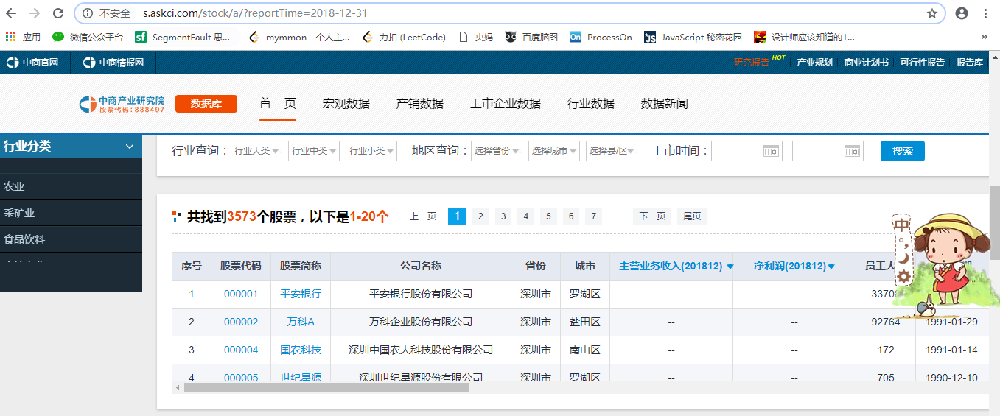
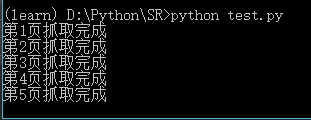
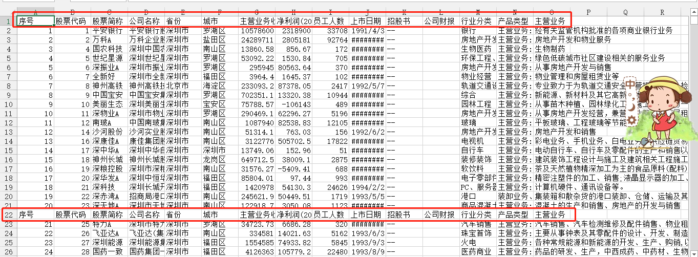

<!DOCTYPE html>
<html>
<head><meta name="generator" content="Hexo 3.8.0">
  <meta charset="utf-8">
  
  <title>Aloha | Gaga酱的奇思妙想</title>
  <meta name="viewport" content="width=device-width, initial-scale=1, maximum-scale=1">
  
    <meta name="keywords" content="萌萌の嘎嘎">
  
  
  
  
  <meta name="description" content="爬爬爬爬爬~">
<meta name="keywords" content="python,认真学习の日常,爬虫">
<meta property="og:type" content="article">
<meta property="og:title" content="磨刀霍霍：爬虫我又来啦~">
<meta property="og:url" content="http://yoursite.com/2019/03/26/磨刀霍霍：爬虫我又来啦/index.html">
<meta property="og:site_name" content="Gaga酱の奇思妙想">
<meta property="og:description" content="爬爬爬爬爬~">
<meta property="og:locale" content="zh-Hans">
<meta property="og:image" content="http://yoursite.com/2019/03/26/磨刀霍霍：爬虫我又来啦/1.png">
<meta property="og:image" content="http://yoursite.com/2019/03/26/磨刀霍霍：爬虫我又来啦/2.png">
<meta property="og:image" content="http://yoursite.com/2019/03/26/磨刀霍霍：爬虫我又来啦/3.png">
<meta property="og:updated_time" content="2019-09-24T15:20:41.525Z">
<meta name="twitter:card" content="summary">
<meta name="twitter:title" content="磨刀霍霍：爬虫我又来啦~">
<meta name="twitter:description" content="爬爬爬爬爬~">
<meta name="twitter:image" content="http://yoursite.com/2019/03/26/磨刀霍霍：爬虫我又来啦/1.png">
  
  <link rel="icon" href="/css/images/favicon.png">
  
    <link href="//fonts.googleapis.com/css?family=Source+Code+Pro" rel="stylesheet" type="text/css">
  
  <link href="https://fonts.googleapis.com/css?family=Open+Sans|Montserrat:700" rel="stylesheet" type="text/css">
  <link href="https://fonts.googleapis.com/css?family=Roboto:400,300,300italic,400italic" rel="stylesheet" type="text/css">
  <link href="//cdn.bootcss.com/font-awesome/4.6.3/css/font-awesome.min.css" rel="stylesheet">
  <style type="text/css">
    @font-face{font-family:futura-pt;src:url(https://use.typekit.net/af/9749f0/00000000000000000001008f/27/l?subset_id=2&fvd=n5) format("woff2");font-weight:500;font-style:normal;}
    @font-face{font-family:futura-pt;src:url(https://use.typekit.net/af/90cf9f/000000000000000000010091/27/l?subset_id=2&fvd=n7) format("woff2");font-weight:500;font-style:normal;}
    @font-face{font-family:futura-pt;src:url(https://use.typekit.net/af/8a5494/000000000000000000013365/27/l?subset_id=2&fvd=n4) format("woff2");font-weight:lighter;font-style:normal;}
    @font-face{font-family:futura-pt;src:url(https://use.typekit.net/af/d337d8/000000000000000000010095/27/l?subset_id=2&fvd=i4) format("woff2");font-weight:400;font-style:italic;}</style>
    
  <link rel="stylesheet" id="athemes-headings-fonts-css" href="//fonts.googleapis.com/css?family=Yanone+Kaffeesatz%3A200%2C300%2C400%2C700&amp;ver=4.6.1" type="text/css" media="all">

  <link rel="stylesheet" id="athemes-headings-fonts-css" href="//fonts.googleapis.com/css?family=Oswald%3A300%2C400%2C700&amp;ver=4.6.1" type="text/css" media="all">
  <link rel="stylesheet" href="/css/style.css">

  <script src="/js/jquery-3.1.1.min.js"></script>

  <!-- Bootstrap core CSS -->
  <link rel="stylesheet" href="/css/bootstrap.css">
  <link rel="stylesheet" href="/css/fashion.css">
  <link rel="stylesheet" href="/css/glyphs.css">
  <!-- Global site tag (gtag.js) - Google Analytics -->
  <script async src="https://www.googletagmanager.com/gtag/js?id=UA-142486934-1"></script>
  <script>
    window.dataLayer = window.dataLayer || [];
    function gtag(){dataLayer.push(arguments);}
    gtag('js', new Date());

    gtag('config', 'UA-142486934-1');
  </script>


</head>
</html>


  <body data-spy="scroll" data-target="#toc" data-offset="50">


  


<header id="allheader" class="site-header" role="banner">
  <div class="clearfix container">
      <div class="site-branding">

          <h3 class="site-title">
            
              <a href="/" title="Gaga酱の奇思妙想" rel="home"> Gaga酱の奇思妙想 </a>
            
          </h3>
          
          
            <div class="site-description">深水静流</div>
          
            
          <nav id="main-navigation" class="main-navigation" role="navigation">
            <a class="nav-open">Menu</a>
            <a class="nav-close">Close</a>

            <div class="clearfix sf-menu">
              <ul id="main-nav" class="menu sf-js-enabled sf-arrows" style="touch-action: pan-y;">
                    
                      <li class="menu-item menu-item-type-custom menu-item-object-custom menu-item-home menu-item-1663"> <a class href="/">冲鸭❤</a> </li>
                    
                      <li class="menu-item menu-item-type-custom menu-item-object-custom menu-item-home menu-item-1663"> <a class href="/archives">archives❤</a> </li>
                    
                      <li class="menu-item menu-item-type-custom menu-item-object-custom menu-item-home menu-item-1663"> <a class href="/categories">碎碎念的基本法❤</a> </li>
                    
                      <li class="menu-item menu-item-type-custom menu-item-object-custom menu-item-home menu-item-1663"> <a class href="/tags">tags❤</a> </li>
                    
                      <li class="menu-item menu-item-type-custom menu-item-object-custom menu-item-home menu-item-1663"> <a class href="/about">岁月如歌❤</a> </li>
                    
                      <li class="menu-item menu-item-type-custom menu-item-object-custom menu-item-home menu-item-1663"> <a class href="/books">阅❤</a> </li>
                    
                      <li class="menu-item menu-item-type-custom menu-item-object-custom menu-item-home menu-item-1663"> <a class href="/movies">影❤</a> </li>
                    
              </ul>
            </div>
          </nav>

      </div>
  </div>
</header>


  <div id="container">
    <div id="wrap">
            
      <div id="content" class="outer">
        
          <section id="main" style="float:none;"><article id="post-磨刀霍霍：爬虫我又来啦" style="width: 66%; float:left;" class="article article-type-post" itemscope itemprop="blogPost">
  <div id="articleInner" class="clearfix post-1016 post type-post status-publish format-standard has-post-thumbnail hentry category-template-2 category-uncategorized tag-codex tag-edge-case tag-featured-image tag-image tag-template">
    
    
      <header class="article-header">
        
  
    <h1 class="thumb" itemprop="name">
      磨刀霍霍：爬虫我又来啦~
    </h1>
  

      </header>
    
    <div class="article-meta">
      
	<a href="/2019/03/26/磨刀霍霍：爬虫我又来啦/" class="article-date">
	  <time datetime="2019-03-26T14:51:29.000Z" itemprop="datePublished">March 26, 2019</time>
	</a>

      
	<span class="ico-folder"></span>
    <a class="article-category-link" href="/categories/小李の放学后/">小李の放学后</a>
 
      
    </div>
    <div class="article-entry" itemprop="articleBody">
      
        <p></p>
<h4 id="写在前面的话"><a href="#写在前面的话" class="headerlink" title="写在前面的话"></a>写在前面的话</h4><p>距离上一次爬虫…大概一个月了吧，最近有点小想法，所以一定要捡起小爬虫！<br>说动就动吧！</p>
<h4 id="那就开工吧"><a href="#那就开工吧" class="headerlink" title="那就开工吧~"></a>那就开工吧~</h4><h5 id="热身动作！"><a href="#热身动作！" class="headerlink" title="热身动作！"></a>热身动作！</h5><p>上次配置完了Anaconda和相关的库，来回顾一下会使用到的库。</p>
<ul>
<li>pandas 数据处理库</li>
<li>re 正则匹配库</li>
<li>urllib http请求库</li>
<li>pymysql 连接数据库</li>
<li>os 操作系统交互功能库</li>
<li>csv 用于操作csv文件</li>
</ul>
<h5 id="写写写之前的碎碎念！"><a href="#写写写之前的碎碎念！" class="headerlink" title="写写写之前的碎碎念！"></a>写写写之前的碎碎念！</h5><p>工欲善其事必先利其器！<br><strong>先梳理下爬虫的思路</strong>：</p>
<ol>
<li>先分析网页结构——常见的为表格形式</li>
<li>确定主要函数——包括网页提取，表格内容的提取以及主函数</li>
<li>存储进数据库（喵喵喵，我好像数据库还没有安装???</li>
</ol>
<p><strong>然后切换到我们要的环境下！</strong><br><figure class="highlight applescript"><table><tr><td class="code"><pre><span class="line">conda <span class="built_in">activate</span> learn <span class="comment">#learn就是我们之前设置好的一个环境啦</span></span><br></pre></td></tr></table></figure></p>
<h5 id="测试爬取上市公司信息"><a href="#测试爬取上市公司信息" class="headerlink" title="测试爬取上市公司信息"></a>测试爬取上市公司信息</h5><p>根据参考的资料，做了一点点修改，资料对应的数据有点早了~<br>主要分析的网页主页为：<a href="http://s.askci.com/stock/a/?reportTime=2017-12-31" target="_blank" rel="noopener">http://s.askci.com/stock/a/?reportTime=2017-12-31</a> (截止至2017-12-31的A股数据库)<br><br>主要采集就是中间的表格部分，已知有<code>3573</code>个股票，每页<code>20</code>个。<br>通过对URL对比分析，<br><figure class="highlight crystal"><table><tr><td class="code"><pre><span class="line"><span class="symbol">http:</span>/<span class="regexp">/s.askci.com/stock</span><span class="regexp">/a/</span>?reportTime=<span class="number">2017</span>-<span class="number">12</span>-<span class="number">31</span>&amp;pageNum=<span class="number">1</span><span class="comment">#QueryCondition </span></span><br><span class="line"><span class="comment">#第一页的URL</span></span><br><span class="line"></span><br><span class="line"><span class="symbol">http:</span>/<span class="regexp">/s.askci.com/stock</span><span class="regexp">/a/</span>?reportTime=<span class="number">2017</span>-<span class="number">12</span>-<span class="number">31</span>&amp;pageNum=<span class="number">2</span><span class="comment">#QueryCondition</span></span><br><span class="line"><span class="comment">#第二页的URL</span></span><br></pre></td></tr></table></figure></p>
<ol>
<li>主要是<code>pageNum</code>做为区别，所以我们得出，需要翻页3573/20 = 179页</li>
<li>根据网页结构，我们发现需要的表格内容，在<code>第四个table</code>下。然后我们将使用一个很酷炫的方法！Pandas的<code>read_html()</code>!用来读取表格！</li>
<li>我们把获取到的表格数据，写入csv文件中，这时候就用到了<code>to_csv</code>~  PS:Pandas拥有<code>read_csv</code>的方法，<code>to_csv</code>是DataFrame类的方法</li>
</ol>
<p>to_csv()的参数有:</p>
<ul>
<li><p>路径 path_or_buf: A string path to the file to write or a StringIO</p>
<figure class="highlight less"><table><tr><td class="code"><pre><span class="line"><span class="selector-tag">e</span><span class="selector-class">.to_csv</span>(<span class="string">'x.csv'</span>)  #相对位置，保存在<span class="selector-tag">getwcd</span>()获得的路径下</span><br><span class="line"><span class="selector-tag">e</span><span class="selector-class">.to_csv</span>(<span class="string">'C:/files/x.csv'</span>)  #绝对位置</span><br></pre></td></tr></table></figure>
</li>
<li><p>分隔符 <code>sep</code> : Field delimiter for the output file (default ”,”)</p>
<figure class="highlight 1c"><table><tr><td class="code"><pre><span class="line">e.to_csv('C:/files/x.csv',sep='?')<span class="meta">#使用?分隔需要保存的数据，如果不写，默认是,</span></span><br></pre></td></tr></table></figure>
</li>
<li><p>替换空值 <code>na_rep</code>: A string representation of a missing value (default ‘’)</p>
<figure class="highlight 1c"><table><tr><td class="code"><pre><span class="line">e.to_csv('C:/files/x.csv',na_rep='NA') <span class="meta">#确实值保存为NA，如果不写，默认是空</span></span><br></pre></td></tr></table></figure>
</li>
<li><p>格式 <code>float_format</code>: Format string for floating point numbers</p>
<figure class="highlight stylus"><table><tr><td class="code"><pre><span class="line"><span class="selector-tag">dt</span>.to_csv(<span class="string">'C:/files/x.csv'</span>,float_format=<span class="string">'%.2f'</span>) #保留两位小数</span><br></pre></td></tr></table></figure>
</li>
<li><p>是否保留某列数据 <code>cols</code>: Columns to write (default None)</p>
<figure class="highlight stylus"><table><tr><td class="code"><pre><span class="line"><span class="selector-tag">dt</span>.to_csv(<span class="string">'C:/files/x.csv'</span>,<span class="attribute">columns</span>=[<span class="string">'name'</span>]) #保存索引列和name列</span><br></pre></td></tr></table></figure>
</li>
<li><p>是否保留列名 <code>header</code>: Whether to write out the column names (default True)</p>
<figure class="highlight stylus"><table><tr><td class="code"><pre><span class="line"><span class="selector-tag">dt</span>.to_csv(<span class="string">'C:/files/x.csv'</span>,header=<span class="number">0</span>) #不保存列名</span><br></pre></td></tr></table></figure>
</li>
<li><p>是否保留行索引 <code>index</code>:  whether to write row (index) names (default True)</p>
<figure class="highlight axapta"><table><tr><td class="code"><pre><span class="line">dt.to_csv(<span class="string">'C:/files/x.csv'</span>,<span class="keyword">index</span>=<span class="number">0</span>) <span class="meta">#不保存行索引</span></span><br></pre></td></tr></table></figure>
</li>
</ul>
<p>所以最终成品的demo是：<br><figure class="highlight python"><table><tr><td class="code"><pre><span class="line"><span class="comment">#!/usr/bin/env python3</span></span><br><span class="line"><span class="comment"># -*- coding: utf-8 -*-</span></span><br><span class="line"></span><br><span class="line"><span class="string">' a test module '</span></span><br><span class="line"></span><br><span class="line"><span class="comment">#此处author要改成本宝宝了</span></span><br><span class="line">__author__ = <span class="string">'Gaga Lee'</span></span><br><span class="line"></span><br><span class="line"><span class="comment">#好的，这个是个爬虫测试</span></span><br><span class="line"></span><br><span class="line"><span class="keyword">import</span> urllib        <span class="comment">#http请求库</span></span><br><span class="line"><span class="keyword">import</span> re            <span class="comment">#正则匹配库</span></span><br><span class="line"><span class="keyword">import</span> pandas <span class="keyword">as</span> pd  <span class="comment">#数据处理库</span></span><br><span class="line"><span class="keyword">import</span> pymysql       <span class="comment">#连接数据库</span></span><br><span class="line"><span class="keyword">import</span> os</span><br><span class="line"><span class="keyword">import</span> csv           <span class="comment">#csv文件处理库</span></span><br><span class="line"></span><br><span class="line"><span class="comment">##以上为使用到的库</span></span><br><span class="line"><span class="comment">#分析得出需要到达179页作为标记</span></span><br><span class="line"><span class="keyword">for</span> i <span class="keyword">in</span> range(<span class="number">1</span>,<span class="number">179</span>):</span><br><span class="line">	url = <span class="string">'http://s.askci.com/stock/a/?reportTime=2017-12-31&amp;pageNum=%s'</span> % (str(i)) <span class="comment">#字符串替换，记得字符串化</span></span><br><span class="line">	tb = pd.read_html(url)[<span class="number">3</span>] <span class="comment">#读取第四个表格</span></span><br><span class="line">	tb.to_csv(<span class="string">r'1.csv'</span>, mode=<span class="string">'a'</span>, encoding=<span class="string">'utf_8_sig'</span>, header=<span class="number">1</span>, index=<span class="number">0</span>) <span class="comment">#保留列名字，不保留行索引</span></span><br><span class="line">	print(<span class="string">'第'</span>+str(i)+<span class="string">'页抓取完成'</span>)</span><br></pre></td></tr></table></figure></p>
<h5 id="来看下结果吧！"><a href="#来看下结果吧！" class="headerlink" title="来看下结果吧！"></a>来看下结果吧！</h5><p><br>连着抓取179页，稍后来看下csv的结果!<br><br>很好！今天圆满成功！<br>明天的目标就是：存储数据，进行下一步！</p>
<p>参考资料：<a href="https://www.makcyun.top/web_scraping_withpython2.html" target="_blank" rel="noopener">10行代码爬取上市公司信息</a><br>(他的blog风格也很好呢！)</p>
      
    </div>
    <footer class="entry-meta entry-footer">
      
	<span class="ico-folder"></span>
    <a class="article-category-link" href="/categories/小李の放学后/">小李の放学后</a>

      
  <span class="ico-tags"></span>
  <ul class="article-tag-list"><li class="article-tag-list-item"><a class="article-tag-list-link" href="/tags/python/">python</a></li><li class="article-tag-list-item"><a class="article-tag-list-link" href="/tags/爬虫/">爬虫</a></li><li class="article-tag-list-item"><a class="article-tag-list-link" href="/tags/认真学习の日常/">认真学习の日常</a></li></ul>

      
        
	<div id="comment">
	
	<!-- 多说评论框 start -->
	 <div class="ds-thread" data-thread-key="/2019/03/26/磨刀霍霍：爬虫我又来啦/" data-title="磨刀霍霍：爬虫我又来啦~" data-url="http://yoursite.com/2019/03/26/磨刀霍霍：爬虫我又来啦/"></div>
	<!-- 多说评论框 end -->
	<!-- 多说公共JS代码 start (一个网页只需插入一次) -->
	<script type="text/javascript">
	var duoshuoQuery = {short_name:"iTimeTraveler"};
	  (function() {
	    var ds = document.createElement('script');
	    ds.type = 'text/javascript';ds.async = true;
	    ds.src = (document.location.protocol == 'https:' ? 'https:' : 'http:') + '//static.duoshuo.com/embed.js';
	    ds.charset = 'UTF-8';
	    (document.getElementsByTagName('head')[0] 
	     || document.getElementsByTagName('body')[0]).appendChild(ds);
	  })();
	  </script>
	<!-- 多说公共JS代码 end -->
	
	</div>
	<link rel="stylesheet" href="/css/comment.css">


      
    </footer>
    <hr class="entry-footer-hr">
  </div>
  
    
<nav id="article-nav">
  
    <a href="/2019/03/31/Y想-190331/" id="article-nav-newer" class="article-nav-link-wrap">
      <strong class="article-nav-caption">Newer</strong>
      <div class="article-nav-title">
        
          Y想-190331
        
      </div>
    </a>
  
  
    <a href="/2019/03/26/小李飞刀：做题第十弹！/" id="article-nav-older" class="article-nav-link-wrap">
      <strong class="article-nav-caption">Older</strong>
      <div class="article-nav-title">小李飞刀：做题第十弹！</div>
    </a>
  
</nav>

  
</article>


<!-- Table of Contents -->

  <aside id="sidebar">
    <div id="toc" class="toc-article">
    <strong class="toc-title">Contents</strong>
    
      <ol class="nav"><li class="nav-item nav-level-4"><a class="nav-link" href="#写在前面的话"><span class="nav-number">1.</span> <span class="nav-text">写在前面的话</span></a></li><li class="nav-item nav-level-4"><a class="nav-link" href="#那就开工吧"><span class="nav-number">2.</span> <span class="nav-text">那就开工吧~</span></a><ol class="nav-child"><li class="nav-item nav-level-5"><a class="nav-link" href="#热身动作！"><span class="nav-number">2.1.</span> <span class="nav-text">热身动作！</span></a></li><li class="nav-item nav-level-5"><a class="nav-link" href="#写写写之前的碎碎念！"><span class="nav-number">2.2.</span> <span class="nav-text">写写写之前的碎碎念！</span></a></li><li class="nav-item nav-level-5"><a class="nav-link" href="#测试爬取上市公司信息"><span class="nav-number">2.3.</span> <span class="nav-text">测试爬取上市公司信息</span></a></li><li class="nav-item nav-level-5"><a class="nav-link" href="#来看下结果吧！"><span class="nav-number">2.4.</span> <span class="nav-text">来看下结果吧！</span></a></li></ol></li></ol>
    
    </div>
  </aside>


</section>
        
      </div>

    </div>
    <!-- <nav id="mobile-nav">
  
    <a href="/" class="mobile-nav-link">冲鸭❤</a>
  
    <a href="/archives" class="mobile-nav-link">archives❤</a>
  
    <a href="/categories" class="mobile-nav-link">碎碎念的基本法❤</a>
  
    <a href="/tags" class="mobile-nav-link">Tags❤</a>
  
    <a href="/about" class="mobile-nav-link">岁月如歌❤</a>
  
    <a href="/books" class="mobile-nav-link">阅❤</a>
  
    <a href="/movies" class="mobile-nav-link">影❤</a>
  
</nav> -->
    <footer id="footer" class="site-footer">
  

  <div class="clearfix container">
      <div class="site-info">
	      &copy; 2021 Gaga酱の奇思妙想 All Rights Reserved.
        
      </div>
      <div class="site-credit">
        Theme by <a href="https://github.com/iTimeTraveler/hexo-theme-hipaper" target="_blank">hipaper</a>
      </div>
  </div>
</footer>


<!-- min height -->

<script>
    var wrapdiv = document.getElementById("wrap");
    var contentdiv = document.getElementById("content");

    wrapdiv.style.minHeight = document.body.offsetHeight - document.getElementById("allheader").offsetHeight - document.getElementById("footer").offsetHeight + "px";
    contentdiv.style.minHeight = document.body.offsetHeight - document.getElementById("allheader").offsetHeight - document.getElementById("footer").offsetHeight + "px";


    <!-- headerblur min height -->
    
    
</script>
    
<div style="display: none;">
  <script src="https://s11.cnzz.com/z_stat.php?id=1260716016&web_id=1260716016" language="JavaScript"></script>
</div>

<!-- mathjax config similar to math.stackexchange -->

<script type="text/x-mathjax-config">
  MathJax.Hub.Config({
    tex2jax: {
      inlineMath: [ ['$','$'], ["\\(","\\)"] ],
      processEscapes: true
    }
  });
</script>

<script type="text/x-mathjax-config">
    MathJax.Hub.Config({
      tex2jax: {
        skipTags: ['script', 'noscript', 'style', 'textarea', 'pre', 'code']
      }
    });
</script>

<script type="text/x-mathjax-config">
    MathJax.Hub.Queue(function() {
        var all = MathJax.Hub.getAllJax(), i;
        for(i=0; i < all.length; i += 1) {
            all[i].SourceElement().parentNode.className += ' has-jax';
        }
    });
</script>

<script type="text/javascript" src="https://cdn.mathjax.org/mathjax/latest/MathJax.js?config=TeX-AMS-MML_HTMLorMML">
</script>


  <link rel="stylesheet" href="/fancybox/jquery.fancybox.css">
  <script src="/fancybox/jquery.fancybox.pack.js"></script>


<script src="/js/script.js"></script>
<script src="/js/bootstrap.js"></script>
<script src="/js/main.js"></script>


  <script type="text/javascript" src="js/love.js"></script>
  <script type="text/javascript" src="js/float.js"></script>
  <script type="text/javascript" src="js/typewriter.js"></script>
  <script type="text/javascript" color="0,104,183" opacity="1" zindex="-1" count="50" src="js/particle.js"></script>
  </div>

  <a id="rocket" href="#top" class=""></a>
  <script type="text/javascript" src="/js/totop.js" async=""></script>
</body>
</html>
